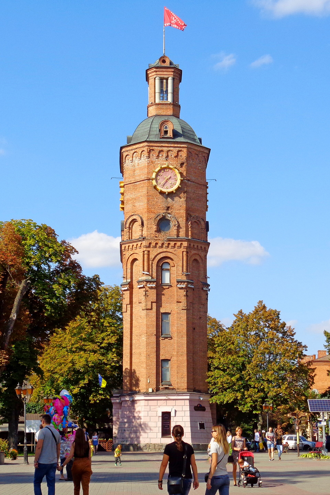
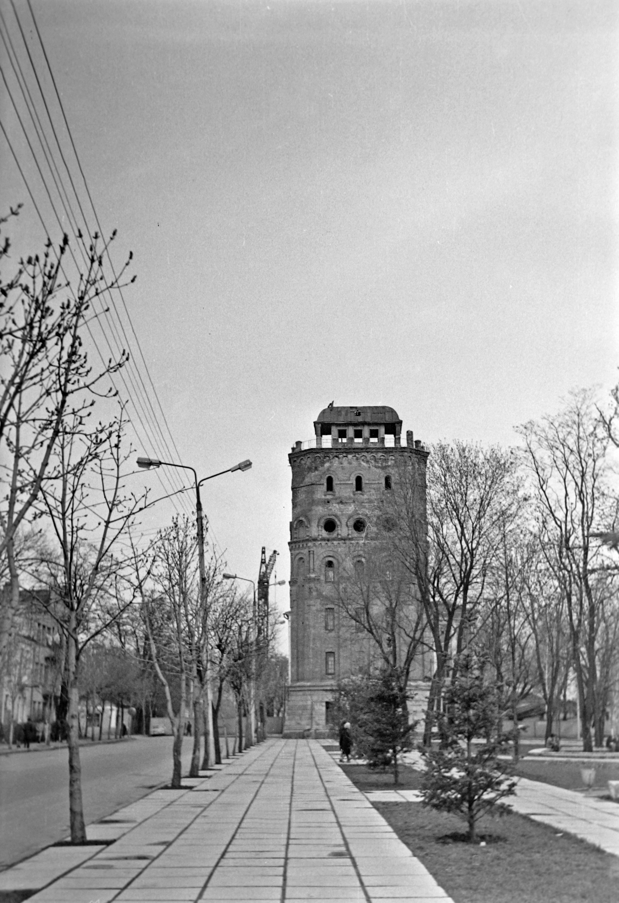
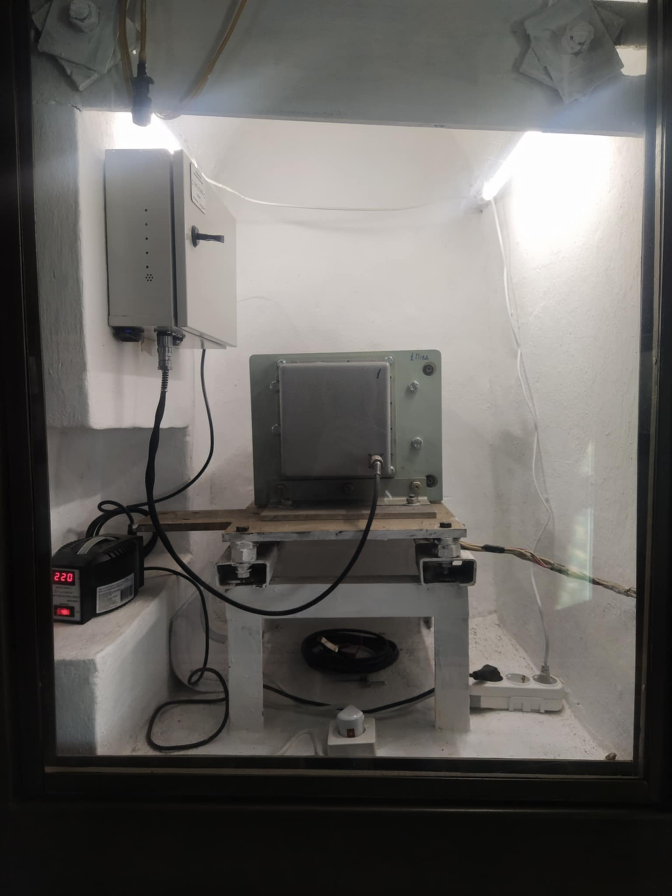
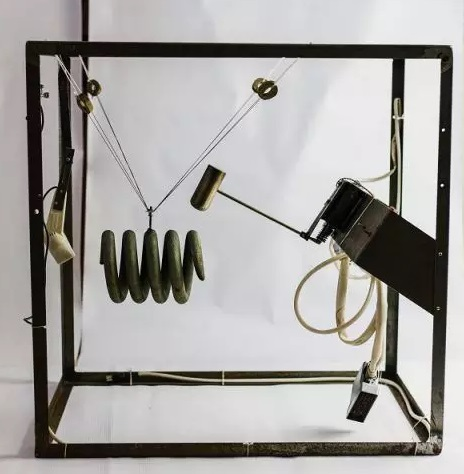

Ієрархія та наратив
Довгі секції з підзаголовками, таймлайн і короткі блоки «ключ — значення», як на сайтах музеїв та міських брендів: відвідувач швидко знаходить дати, адресу й сенс місця.
Європейська площа
Водонапірна вежа Григорія Артинова — інженерна та архітектурна пам'ятка початку XX століття й один із головних символів Вінниці.
Перед макетом
Орієнтир — публічні кейси культурних інституцій і нагороджені проєкти (зокрема музейні портали на кшталт Nordiska museet та презентації на Awwwards): спокійна подача, великі зображення, читабельна типографіка, анімації прив'язані до скролу та наведення — без «шуму», який відволікає від фактів.
Довгі секції з підзаголовками, таймлайн і короткі блоки «ключ — значення», як на сайтах музеїв та міських брендів: відвідувач швидко знаходить дати, адресу й сенс місця.
Темна база й теплі акценти (як у преміальних культурних кейсах) підкреслюють матеріал — цегла, граніт, патина часу — і не конкурують з фотографіями вежі.
Плавні появи блоків, легкий «Ken Burns» у hero, мікроанімації навігації та карток: рух підтримує
увагу, але вимикається при prefers-reduced-motion.
Ідентифікація
Офіційна назва — водонапірна вежа (Вінниця). Пам'ятка архітектури місцевого значення з 1983 року, з 2000-го — у переліку міської символіки. З 2022 року на балансі Музею Вінниці.
Адреса: вул. Миколи Оводова, 20. Локація: північно-східний кут Європейської площі, поруч із Вічним вогнем, пам'ятником Артинову та обласним краєзнавчим музеєм.
Автор проєкту — Григорій Григорович Артинов, перший головний архітектор Вінниці (1900–1919).
Форма восьмикутна: у плані перетинаються два кола, що нагадує символ нескінченності. Фундамент і перший поверх — граніт; вище — червона цегла, пілястри, лжеарки, вузькі вікна-бійниці, купол із башточкою.
За задумом, силует мав асоціюватися з міською ратушею й європейською традицією площі.
Конструкція
Оригінально на даху був майданчик пожежного спостереження, піч для підігріву води взимку та швейцарський годинник на чотири циферблати (3000 руб.).
Перший водогін: мережа ~1,3 км, продуктивність 600 м³/добу, вода з Південного Бугу після фільтрації; три водорозбірні будки та окремі підключення для заможних родин. Першим споживачем стала жіноча гімназія на Соборній, 94.
Під час реконструкції 1978–1985 (арх. Є. Пантелеймонов, В. Спусканюк) вежу пристосували під музей: годинник перенесли на шостий ярус, механізм виготовили у Львові, циферблати спершу були бордові.
Звукову систему інженер Борис Бронштейн зібрав «кустарно»: молоток б'є у пружину від вагона, сигнал підсилюють гучномовці. Щоранку о 9:00 лунає «Il Silenzio» — з дня повномасштабного вторгнення 2022 року.


Архітектор
1860, Ніжин — 9 (22) грудня 1919, Вінниця. Освіта: Санкт-Петербурзьке училище цивільних інженерів. Цивільний інженер, генерал-лейтенант будівельної комісії на службі військового відомства.
Збережені споруди у Вінниці (крім вежі): готель «Савой» (нині «Україна»), міський театр, жіноча гімназія, бібліотека ім. Гоголя, будинок міської Думи, Свято-Воскресенська церква, колишня синагога (ДЮСШ).
Пам'ять: вулиця Архітектора Артинова, меморіальна дошка (оновлена 2010), скульптура на Європейській (В. Цісарик).
Передісторія
«Гра дев'яток»: збудовано за дев'ять місяців, як водонапірна — працювала дев'ять років.
Функції
Будівництво, водонапірна функція, пожежна каланча, міський годинник.
Спостережний пункт окупантів; пошкодження під час боїв.
Комунальні квартири Водоканалу, згодом житловий будинок; частково пожежна каланча до 1957.
Реконструкція під музей; з 1983 — облік як пам'ятка; музей меморіалу бойової слави.
Музей пам'яті воїнів Вінниччини, загиблих в Афганістані; закрито 24.02.2022.
25 вересня — повне відкриття для відвідувачів, включно з оглядовим майданчиком.


Друга світова війна
19–20 липня 1941 року під час захоплення міста пошкоджено оглядовий майданчик, розбито скляні циферблати, вибито шибки.
19 березня 1944 року під час визволення радянська артилерія обстрілювала середмістя, намагаючись вибити німецького коригувальника з вежі — сліди влучань видно на 5–6 поверхах біля головного циферблата.
2024–2025
На балансі Музею Вінниці: експозиції на першому поверсі, фотовиставка «Із висот століть», нічне підсвічування, скульптури поруч. За опитуванням 2021 року вежу назвали головним символом міста.
У 1970-х планували знесення за радянською постановою про «соціалістичний образ міста» — вежу врятували громадські зусилля краєзнавців і митців.
Для екскурсії
Введення в експлуатацію відклали, доки привезли годинник «з добрим ходом».
З одного боку фасаду — традиційний знак «захисту» споруди.
Дерев'яні пазли-макети вежі замовляли навіть до Ізраїлю та країн Африки.
За документами 1917 року місто так і не розрахувалось з Артиновим за водогін і каналізацію.
Відвідувачам